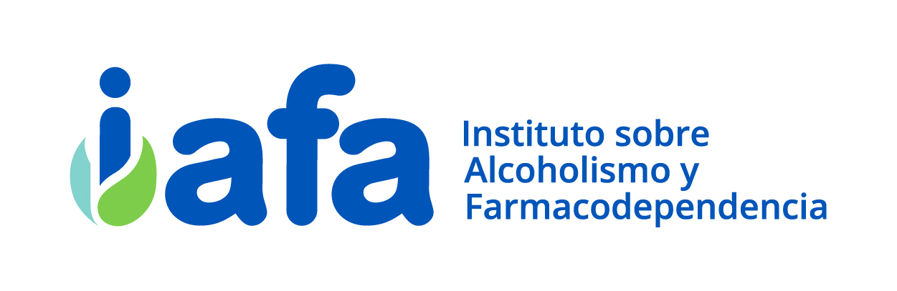
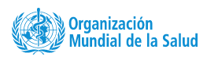
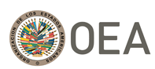
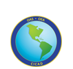
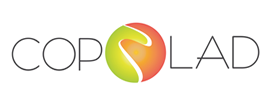

Instituto sobre Alcoholismo y Farmacodependencia: https://iafa.go.cr/
El Instituto sobre Alcoholismo y Farmacodependencia es un órgano adscrito al Ministerio de Salud, el cual tiene independencia en su funcionamiento administrativo y personalidad jurídica instrumental, teniendo a su cargo la dirección técnica, el estudio, la prevención, el tratamiento y la rehabilitación de la adicción al alcohol, al tabaco y a otras drogas lícitas o ilícitas, así como la coordinación y aprobación de todos los programas públicos y privados orientados a aquellos mismos fines, de conformidad con dicha ley.
Repositorio de Salud: El IAFA integra el Repositorio en Salud de Costa Rica, que nos permite, organizar, almacenar, preservar, y difundir de manera abierta la producción intelectual resultante de la actividad investigativa e institucional. Ingrese a nuestra comunidad a través del siguiente enlace.
https://repositorio.binasss.sa.cr/repositorio/handle/20.500.11764/4085
Instituto Costarricense sobre Drogas: https://www.icd.go.cr/portalicd/index.php
El Instituto Costarricense sobre Drogas, ente encargado de coordinar, diseñar e implementar las políticas, los planes y las estrategias para la prevención del consumo de drogas, el tratamiento, la rehabilitación y la reinserción de los farmacodependientes, así como las políticas, los planes y las estrategias contra el tráfico ilícito de drogas y actividades conexas, la legitimación de capitales y el financiamiento al terrorismo. El ICD tiene entre sus funciones el diseño y coordinación del Plan nacional sobre drogas, legitimación de capitales y financiamiento al terrorismo.

- Organización Mundial de la Salud. https://www.who.int/es
La Organización Mundial de la Salud (OMS) es el organismo de la Organización de las Naciones Unidas (ONU) especializado en gestionar políticas de prevención, promoción e intervención a nivel mundial en la salud, definida en su Constitución como un estado de completo bienestar físico, mental y social, y no solamente como la ausencia de afecciones o enfermedades.
- Organización Panamericana de la Salud. https://www.paho.org/es
La OPS es la organización internacional especializada en salud pública de las Américas. Trabaja cada día con los países de la región para mejorar y protegerla salud de su población. Brinda cooperación técnica en salud a sus países miembros, combate las enfermedades transmisibles y ataca los padecimientos crónicos y sus causas, fortalece los sistemas de salud y da respuesta ante situaciones de emergencia y desastres.
- BIREME. https://www.paho.org/es/bireme
El Centro Latinoamericano y del Caribe de Información en Ciencias de la Salud, también conocido por su nombre original Biblioteca Regional de Medicina (BIREME), es un centro especializado de la Organización Panamericana de la Salud/Organización Mundial de la Salud (OPS/OMS), orientado a la cooperación técnica en información científica en salud. La misión de BIREME es contribuir para el desarrollo de la salud en los países de América Latina y del Caribe a través de la democratización del acceso, publicación y uso de la información, del conocimiento y de la evidencia científica. Incluye la Biblioteca Virtual en Salud (VBS), Literatura Latinoamericana y del Caribe en Ciencias de la Salud (LILACS). Descriptores en Ciencias de la Salud (DECS/MESH)
Instituto Nacional sobre el Abuso de Drogas. https://www.drugabuse.gov/es
El Instituto Nacional sobre el Abuso de Drogas o NIDA por sus siglas en inglés, es una institución del gobierno estadounidense cuya misión es avanzar en el conocimiento de las causas y consecuencias del uso y la adicción a las drogas, y aplicar ese conocimiento para mejorar la salud pública e individual.


- La Comisión Interamericana para el Control del Abuso de Drogas (CICAD): https://bit.ly/3ma3XDK
Es el órgano consultivo y asesor de la OEA sobre el tema de drogas. Sirve como un foro para que los Estados Miembros de la OEA discutan y encuentren soluciones al problema de las drogas, y brinda asistencia técnica para aumentar su capacidad para contrarrestar dicho problema. Desde su establecimiento en 1986, la CICAD y su Secretaría Ejecutiva han respondido a los constantes y cambiantes desafíos del control de drogas, ampliando sus esfuerzos para promover la cooperación y la coordinación regional con y entre sus Estados Miembros.
- Observatorio Interamericano sobre Drogas: https://bit.ly/3b798Om
El Observatorio Interamericano sobre Drogas (OID) es la unidad de investigación de la Comisión Interamericana para el Control del Abuso de Drogas (CICAD) y brinda apoyo a los Estados Miembros de la OEA en la recopilación y análisis de datos sobre el problema de las drogas para que puedan diseñar políticas nacionales más efectivas.
El Observatorio Europeo de las Drogas y las Toxicomanías. https://www.emcdda.europa.eu/about_en
El Observatorio Europeo de las Drogas y las Toxicomanías (OEDT) es la principal autoridad en materia de drogas ilícitas de la Unión Europea. La agencia con sede en Lisboa proporciona pruebas y análisis científicos independientes sobre todos los aspectos de esta amenaza en constante cambio para las vidas de las personas y la sociedad en general. Su trabajo contribuye a las políticas nacionales y de la UE para proteger a los ciudadanos europeos de los daños relacionados con las drogas

Programa de Cooperación entre América Latina, el Caribe y la Unión Europea en Políticas sobre Drogas: https://bit.ly/3pUc8pX
COPOLAD es un programa de cooperación delegada financiado por la Unión Europea. En el marco de los principios en los que se basa la nueva estrategia de la UE en materia de drogas, el programa acompañará a los países de América Latina y el Caribe en la mejora de sus políticas sobre drogas. El objetivo es apoyar a la consecución de mejores resultados en relación con la promoción y defensa de los derechos humanos, la equidad de género, la salud pública, la seguridad ciudadana y otras dimensiones del desarrollo sostenible